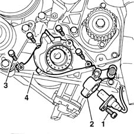
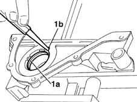
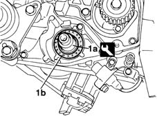

1020D10 front crank shaft oil seal cover - r + r and replace seals with timing belt removed
- Path
- Procedures > 10 ENGINE UNIT > 1020 CRANKCASE SUMP AND COVERS > 1020D oil seals on crank shaft > 1020D10 front crank shaft oil seal cover - r + r and replace seals with timing belt removed
- Kind
- repair procedure (removal / refitting; the operation number is the code)
- Applies to
- engines: 1.6 16v; all production periods
- Interactive page
- https://sloeber94.github.io/elrnDB-fMltpl/en/#/2891205
Applies to: engines: 1.6 16v; all production periods
 Removing
Removing
 Refitting
Refitting1032B44 toothed drive pulley - r + r with timing belt removed
1020A20 crank case oil sump - r + r clean seals for sealant application
1. Undo the retaining bolt.
2. Withdraw the rpm sensor from its seat, open the retaining collar and place to one side.
3. Undo the bolts securing the cover to the engine block.
4. Remove the front cover and recover the seal.

Applies to: engines: 1.6 16v; all production periods
Refitting
RemovingReplace the seal on the engine block.
1. Remove sealing ring (1a) from the front cover by inserting a drift into groove (1b).

Applies to: engines: 1.6 16v; all production periods
Fit the front cover to the engine block.
Tighten the fixing bolts to torque.
 | Fastening | Component | Ø | Value (daNm) |
|---|---|---|---|---|
- | Bolt | CRANKSHAFT FRONT COVER | M6 | 0.7 |
1. Use tool (1a) to fit new oil sealing ring (1b) in place.
 | Name | Country |
|---|---|---|
1a | Fitting tool | 1.860.878.000 |

Applies to: engines: 1.6 16v; all production periods
1020A20 crank case oil sump - r + r clean seals for sealant application
1032B44 toothed drive pulley - r + r with timing belt removed
Topics linked from this page (2)
- 1020A20 crank case oil sump - r + r clean seals for sealant application
- 1032B44 toothed drive pulley - r + r with timing belt removed